创作经历与技能
视频剪辑 / AIGC 视频流程 / 插画约稿 / 多平台内容创作
这一部分不是完整项目，而是我在项目之外的创作经历与技能补充。我接触过视频剪辑与 AIGC 生视频流程培训，业余会接插画约稿，也在互联网上发过二创小说、游戏实况、绘画与美妆内容。这些账号我都只零散更新，没有系统运营过，但动手做过不同类型的内容后，我对内容生产和观众反馈有了实际感受。
- 视频剪辑
- AIGC 视频流程
- 插画约稿
- 二创小说
- 内容创作
- 美妆内容
- 游戏实况
01视频剪辑与 AIGC 视频流程
我具备视频剪辑基础，能够完成素材整理、节奏剪辑、字幕、音画对齐与基础包装。同时，我接触过 AIGC 生视频的流程培训，了解从脚本、分镜、提示词到生成、筛选、剪辑的完整流程，能够把 AI 生成内容纳入实际视频制作中。
视频剪辑
- 素材整理
- 节奏控制
- 字幕
- 音画同步
- 基础包装
AIGC 视频流程
- 脚本拆解
- 分镜设计
- 提示词撰写
- 生成筛选
- 后期剪辑
编导思维
- 选题
- 脚本
- 镜头设计
- 剪辑节奏
- 成片意识
这部分能力和我前面的 AIGC 编导脚本集是连在一起的。我不是只写脚本，也理解脚本之后怎么变成画面、怎么剪成成片、怎么用 AI 辅助生产。
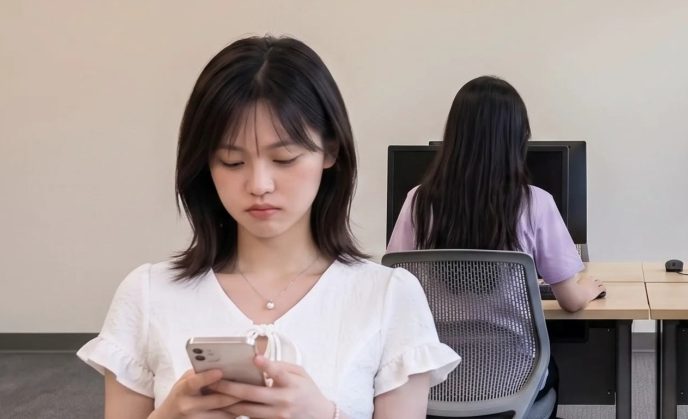
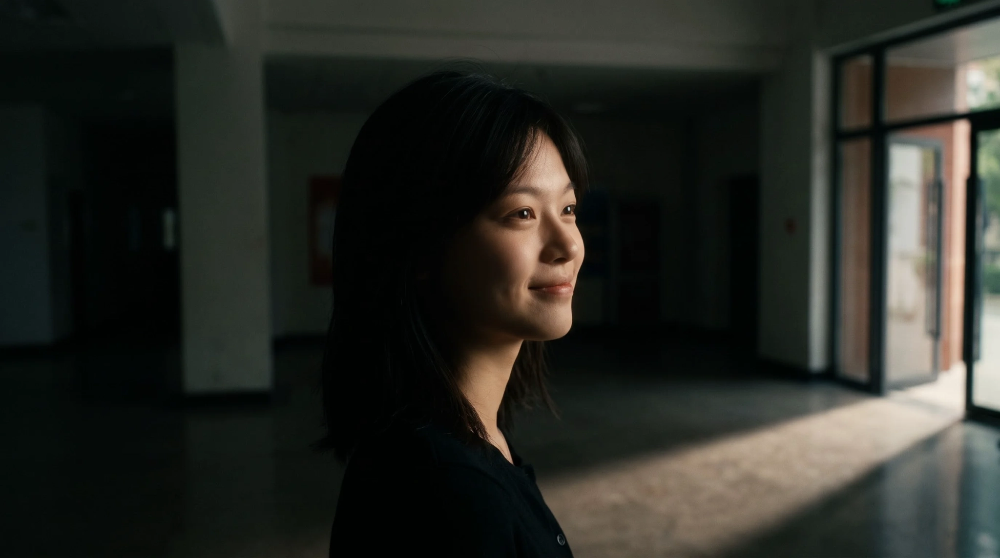
该 AIGC 项目因业务调整中断，最终未完成。以上为过程中产出的部分视觉素材与成果。
02插画约稿与个人创作
业余时间我会接一些私人插画约稿，也会自己画原创角色、插画和短篇内容。约稿多为个人委托，用于头像、OC、同人、收藏或个人企划。虽然不属于商业项目，但同样需要理解需求、沟通风格、按时交付并根据反馈修改。
私人约稿
- 需求沟通
- 风格适配
- 修改反馈
- 按时交付
个人创作
- 原创角色
- 插画
- 短篇
- 视觉实验
绘画方向
- 动漫设计出身
- 角色设计
- 画面表达能力
插画约稿让我练习了“按别人需求画”，个人创作让我保持“按自己想法画”。两边都在训练画面能力、风格适应和交付节奏。
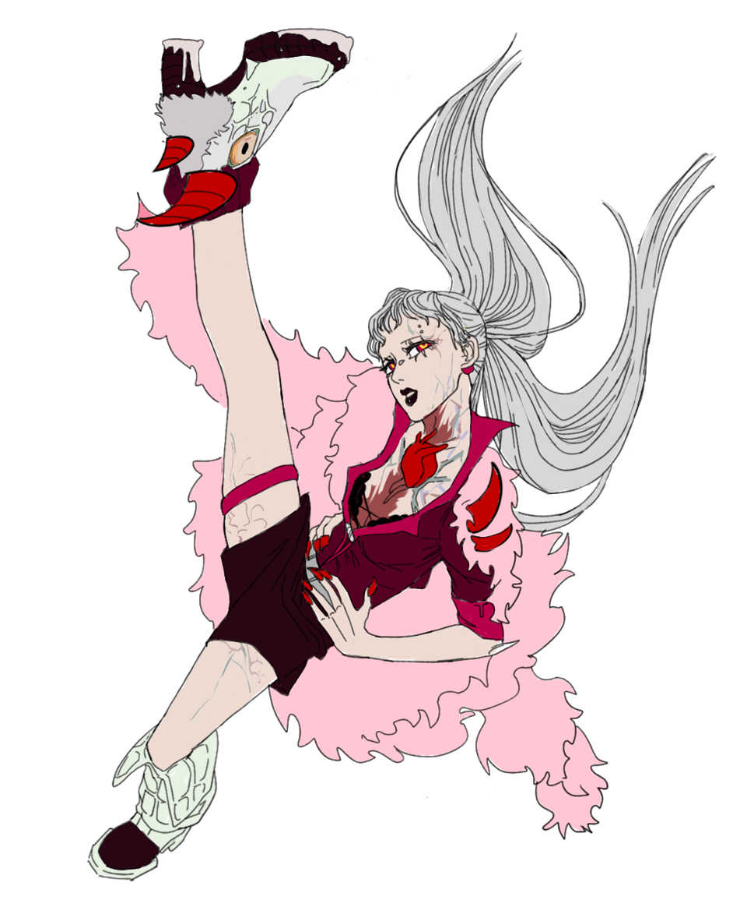
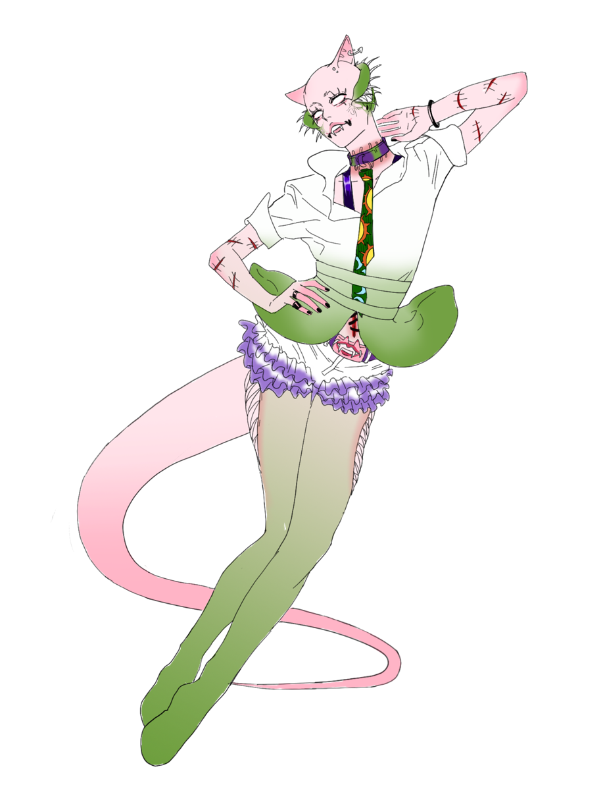
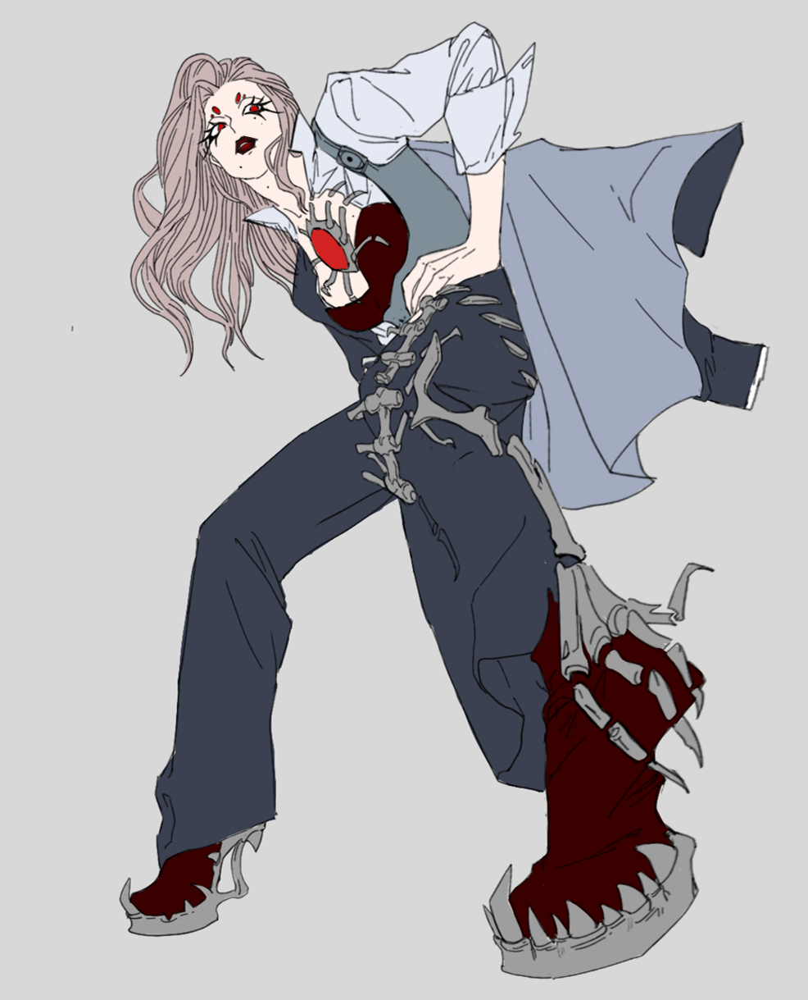
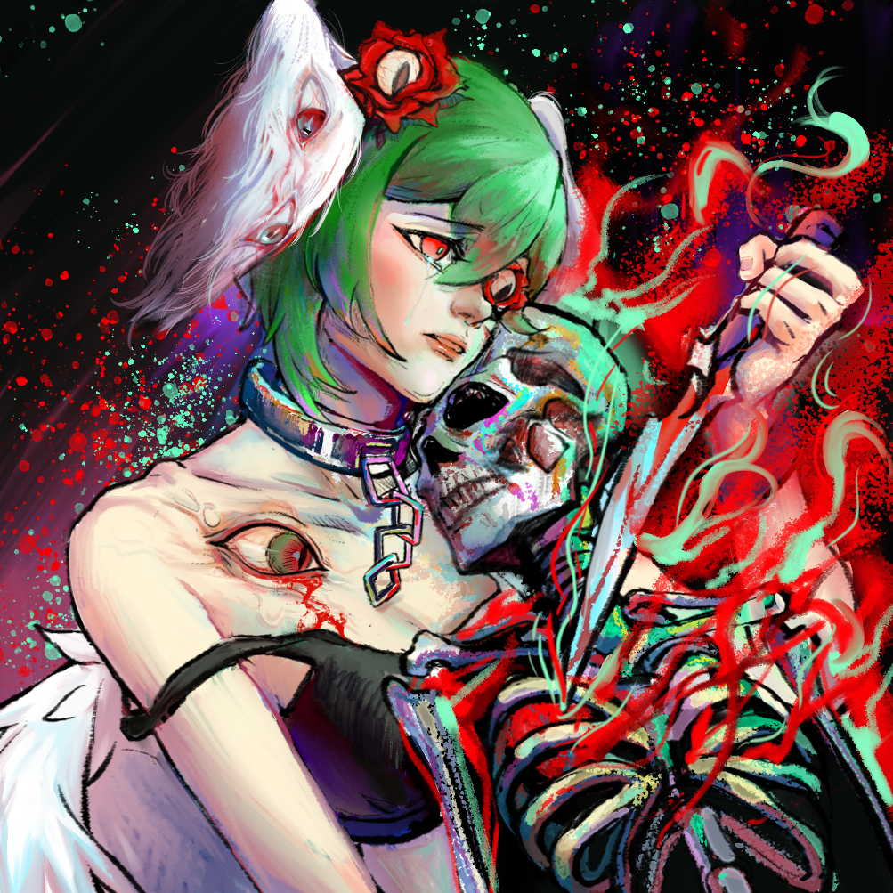
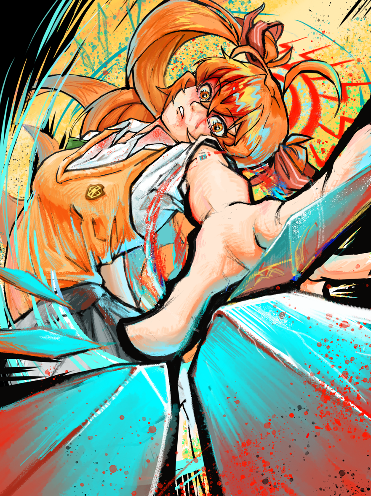
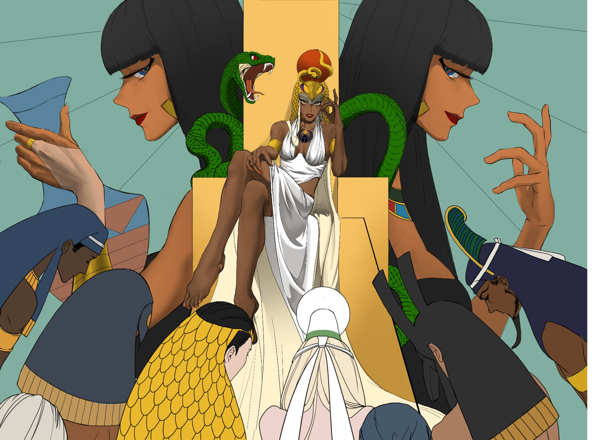
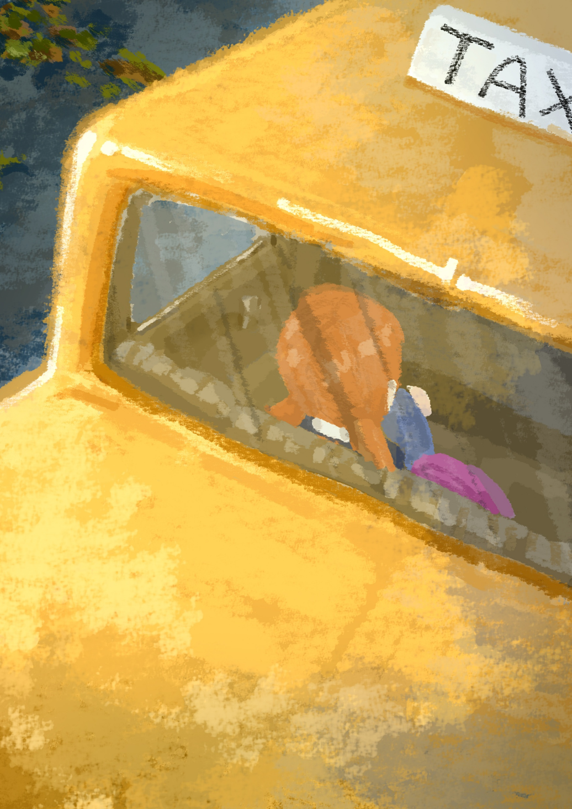
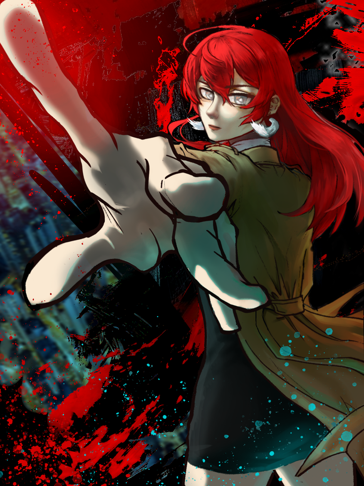
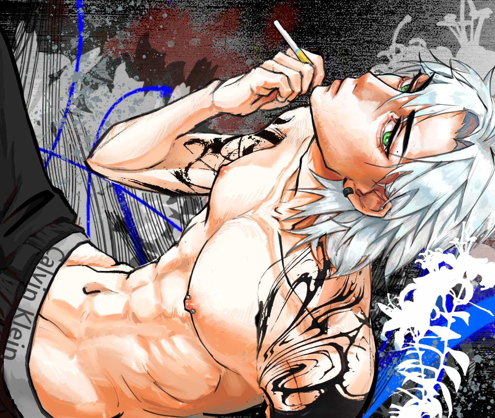
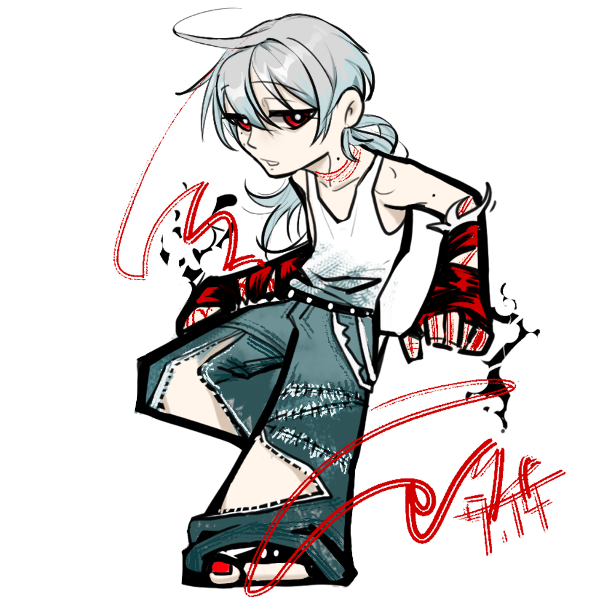
以上为个人原创角色（OC）设定、插画作品与日常画稿练习，点击可查看大图。
03多平台内容发布
我在互联网上发过二创小说、游戏实况视频、绘画与美妆内容，一共涉及四个平台。更新都比较零散，我没有系统做过运营，但这个过程让我实际接触了不同平台的内容形式、发布方式和观众反馈。
二创小说
基于已有作品或角色进行同人写作，涉及文字叙事、更新节奏、读者反馈。
游戏实况视频
剪辑、解说、节奏、封面与标题。
绘画内容
作品展示、过程记录、风格表达。
美妆内容
镜头表现、内容策划、平台偏好。
四个账号都只是零散更新，没有持续日更，更谈不上运营成绩。但做过不同类型的内容后，我对“内容怎么被看见”有了直观感受，也知道不同平台对标题、封面和表达方式的偏好不一样。
04游戏实况视频
在我发过的内容里，游戏实况视频的数据相对好一些。相比其他内容，游戏实况更依赖剪辑节奏、解说状态和观众情绪点，也让我更直接地理解“什么内容能留住人”。
游戏实况 / 剪辑 / 解说
播放与互动相比自己其他内容稍好（以实际数据为准）
录制、剪辑、解说、封面标题、发布
节奏感、观众视角、内容判断
游戏实况是我自己内容里反馈相对好的一类。它让我意识到，内容不只是“做出来”，还要考虑观众在哪一秒会划走、在哪一秒会留下。
05这些经历让我具备什么
能写
脚本、二创小说、分镜、内容策划
能剪
视频剪辑、节奏控制、字幕包装
能画
插画、角色设计、私人约稿
能演
游戏实况、美妆出镜、镜头表达
能接触新工具
AIGC 视频流程、AI 辅助创作
我的方向不在账号运营——几个账号都只是零散更新。但我确实动手做过内容生产的各个环节：能写脚本和故事、能画插画和角色、能剪辑成片，也能在镜头前表达。比起运营成绩，这些经历更实在的收获，是我知道一条内容从想法到发布要经过哪些步骤。